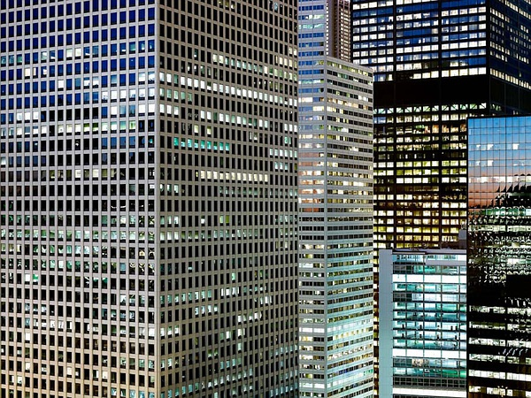

|
迈克尔·沃夫 Michael Wolf
沃尔夫1954年出生于德国慕尼黑，在美国、欧洲和加拿大长大。他曾就读于北多伦多学院和加州大学伯克利分校。1976年，他在德国埃森大学获得视觉传达学位，并在那里与奥托·斯泰诺特(Otto Steinert)一起学习。 1994年，沃尔夫开始了自己的摄影记者生涯，在香港为德国杂志《斯特恩》(Stern.)工作了8年。沃尔夫说，杂志行业的衰落导致新闻摄影任务变得“愚蠢而无聊”。2003年，他决定只从事艺术摄影项目。 |
